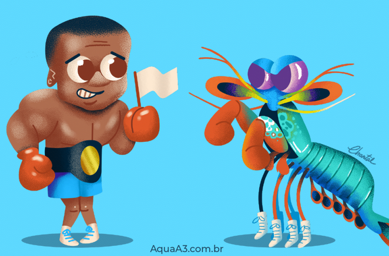
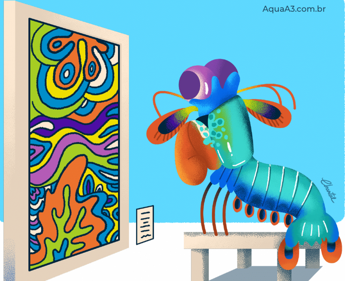
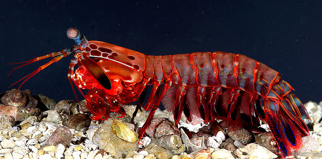
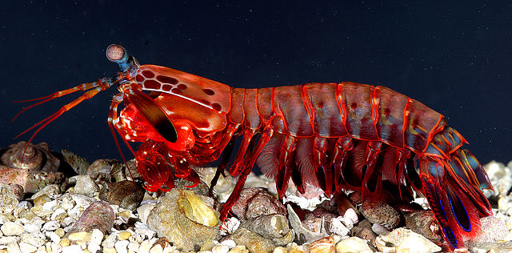
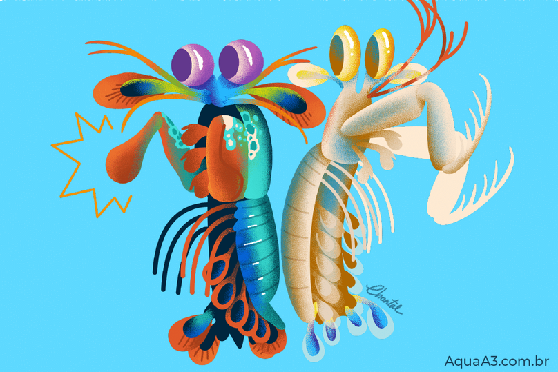

Matis Shrimp
| Name | Odontodactylus scyllarus |
|---|---|
| Kingdom | Animalia |
| Phylum | Arthropoda |
| Subphylum | Crustacea |
| Class | Malacostraca |
| Subclass | Hoplocarida |
| Order | Stomatopoda |

Curiosities
Quick as a bullet and strong as a bull.
Shrimp Mantis can be classified into two groups: those that have punch attack (spearers) and crush attack (smashers). With this, the crushers are considered one of the strongest and fastest animals on the planet, for having a quick attack like a bullet and strong like a bull.
This little marine being has the strongest punch ever unveiled in the animal world. Relative to the speed of a 22-caliber bullet and attacks with the force of 1,500 newtons [2], this animal is capable of killing its prey even when it misses its blow.
The most complex eyes in the animal kingdom
One of the species of mantis shrimp (Gonodactylus smithii) has the most complex eyes in the animal kingdom and is able to see colors that are invisible to many other animals, from the ultraviolet to the infrared.
Distant relationship
Despite its namesake, the Shrimp Mantis is a species of crustacean of the order Stomatopods (Stomatopoda) — distant relatives of crabs, shrimp and lobsters — and has more than 400 different species.
 

The Big Family
One of the most famous species is the crushing Clown Mantis (Odontodactylus scyllarus), very similar to a praying mantis, known for its beauty and dangerousness in saltwater aquariums.
The Mantis Shrimp family has species beyond interesting, so much so that one of them was fundamental for the composition of a character in the movie Project Power. We're talking about snapping shrimp: when it closes its developed claws with extreme force and speed, it produces not only a very loud popping sound, but also a super hot shock wave that hits its prey fatally (something very similar to the ability of his “cousin”).
Assista ao filmeReferences
- "Conheça os 5 superpoderes do camarão mantis" - Aquaa3
- Wikipédia - Ficheiro
- Wikipédia - Stomatopoda
- "Cientistas identificam ‘camarão gigante’ encontrado nos EUA" - Projeto BioMar
- "Mantis Shrimp Packs a Punch | Predator in Paradise" Nat Geo Wild Youtube Channel
- Love Nature Youtube Channel
{kind=link}